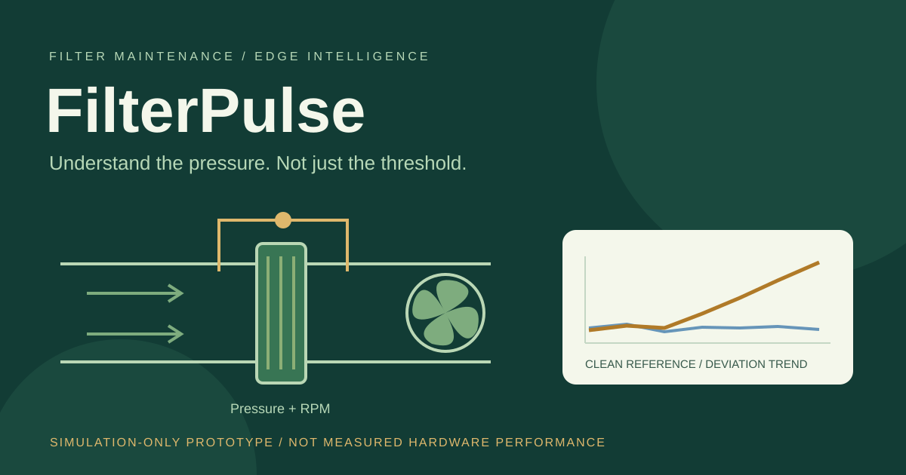
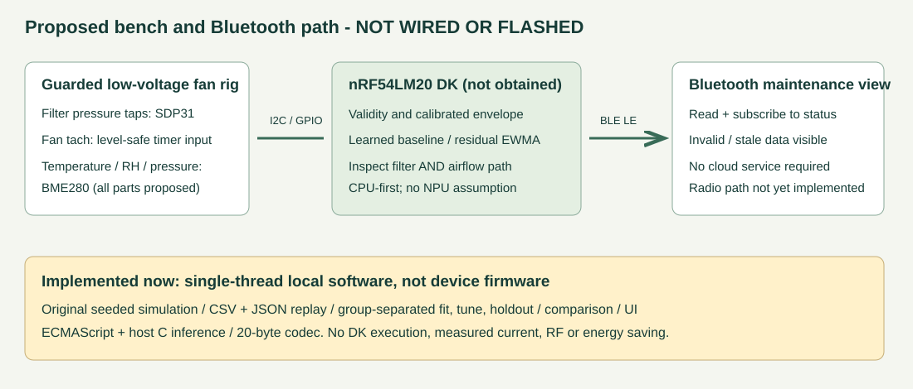

FilterPulse
Explainable filter inspection and matched-condition post-service checks, with planned device-side analysis and Bluetooth on nRF54LM20 DK.

The maintenance question
A pressure alarm is sensitive to fan operating conditions. A fixed threshold may alert on clean high-speed operation and miss a restricted low-speed run. FilterPulse compares a persistent deviation with the same installation's clean reference and guides a check of the filter, duct and sensing path. After a recorded service, it asks whether stable measurements at comparable conditions returned toward the locked reference.
RPM is not airflow. Pressure and RPM cannot uniquely distinguish a filter restriction from duct changes or plausible sensor errors. An alert requests inspection, not a confirmed filter fault. A return to reference is not proof that maintenance is complete, ventilation is safe or filter life has been extended.
Working local prototype
The original software provides CSV/JSON validation, group-separated clean fitting/tuning, residual EWMA and persistence, bounded historical replay, simulated BLE packets with stale/sequence handling, installation-bound work orders, matched before/after panels and audit export. Missing, disconnected or out-of-envelope data produce no assessment. The model is a compact statistical regression plus explicit decision rules, not a neural network or NPU demonstration.
An original allocation-free C implementation covers inference and the 20-byte packet encoder. Calibration, receiver and maintenance workflow currently remain host-side. Actual Nordic firmware, sensor drivers, authenticated metadata and physical GATT/client behavior still need hardware implementation and validation.
What the evidence does and does not show
| Existing evidence | Result | Boundary |
|---|---|---|
| Original synthetic comparison | Condition-corrected candidates demonstrate operating-point sensitivity relative to fixed thresholds. | The toy generator shares the model's approximation; this is not real accuracy or universal superiority. |
| Frozen independent synthetic challenge: 60 runs | Cross-rig FAIL: 10/12 restriction events detected; inspection in 32/48 no-restriction runs; maximum detected-event delay 47 minutes; valid coverage 80.7%. | All failures retained. Duct/sensor alerts may warrant inspection but still count as false alarms for a filter-specific target. No cross-installation deployment claim. |
| Host-compiled C / encoder parity | 7,030 observations, zero mismatches; 7,014 identical packets and 16 explicitly rejected representation overflows. Host state 448 bytes including its model. | Port correctness, including the failed stress outcomes; not DK RAM, cycles, energy, RF or physical performance. |
| Prospective same-installation trial | Protocol and audit workflow implemented; zero measured physical runs. | Clean calibration must precede later independent restriction/clean/duct/sensor controls with genuine pressure-reference checks. No achieved bench target is claimed. |
The intended sustainability value is avoiding unnecessary replacement and missed restrictions. That remains a hypothesis; actual repeatability, false interventions and resource benefits need measurement before any claim of impact.
Proposed architecture, not a wiring diagram

The required platform is nRF54LM20 DK. CPU inference is the first planned path; no NPU result is claimed. The exact received board revision, SDK target and I/O rails will be checked before selecting carriers or connecting sensors. The present diagram is an original block concept, not verified pins or completed firmware.
Initial proposed bill of materials
All project parts below are unobtained, not ordered. Exact vendors, prices and compatibility remain pending. A free DK award, if selected, does not supply all bench parts or instruments.
| Item | Qty | Purpose / verification before use |
|---|---|---|
| Nordic nRF54LM20 DK | 1 | Required analysis/Bluetooth platform; verify revision, SoC, SDK target, power and VDDIO. |
| SDP31 differential-pressure carrier, vendor TBD | 1 | Proposed pressure measurement; verify useful fan/filter range, carrier supply/I2C levels, conversion and tubing. |
| BME280 environmental carrier, vendor TBD | 1 | Temperature, ambient pressure and RH; verify carrier pull-ups, voltage rails and address. |
| Guarded low-voltage tachometer-equipped fan, model TBD | 1 | Verify pressure curve, rated/startup current, tach output and pulses per revolution; never power from GPIO. |
| Current-limited fan supply, fuse and switch | 1 set | Separate safe low-voltage fan rail; ratings depend on the actual fan. |
| Enclosed filter holder, clean filter, removable clean restriction layers and guards | 1 set | Fixed-geometry repeatable resistance surrogate; no dust generation. |
| Pressure tubing, two taps and secure fittings | 1 set | Correct polarity, non-condensing, leak-tight pressure sampling. |
| Conditional sensor regulation/level translation, tach interface, wiring and decoupling | 1 set | Finalize only after checking actual rail and signal compatibility; never connect an overvoltage signal. |
| USB data cable and development host | 1 set | Local Windows/Node host is available; suitable DK cable remains unconfirmed. |
Required measurement access: an independent calibrated pressure reference and tach/electrical-check instrument. Access is not confirmed. A current/power analyzer is needed before a low-power claim, and independent airflow measurement before an airflow-recovery claim. Borrowing, other costs and any procurement require a separate decision; no extra sensing architecture is selected here.
Safe build and evaluation plan
- On receiving the correct DK, confirm its official revision-specific electrical documentation and compatible carriers. Review the pin schematic, keep fan power separate, and build guarded low-voltage hardware.
- Implement actual sensor fault/CRC/timeout and measured tach stability handling before inference. Verify sign, pressure zero/span, leakage and pulses per revolution against independent references.
- Collect at least two independent clean fitting and two tuning acquisitions on one fixed installation, covering supported operating conditions. Freeze coefficients and thresholds before later untouched sessions.
- Evaluate at least six restriction and twelve no-restriction runs across at least two later sessions, including clean, duct-change and sensor-fault controls. Retain misses, inspection onsets, detected delay and invalid coverage. Prospective targets are hypotheses, not contest scores.
- Build the C core for the confirmed DK target and check parity on the device. Implement real Bluetooth status and authenticated model/installation metadata; verify loss, reconnect, staleness and safe no-assessment recovery.
- Measure actual device resources, latency and board/sensor current separately from fan energy. Document real assembly instructions, schematic, photographs and measured negative findings before final entry.
Only an enclosed, guarded, current-limited low-voltage bench is planned. Power off before moving parts. Do not dismantle mains equipment, modify building ventilation or generate smoke, powders or respirable dust. Use removable clean restriction layers, stop on heat/stall/overrange, and do not treat a resistance surrogate as dust aging or filtration efficiency.
What remains missing
No DK/sensors, confirmed reference instruments, actual firmware/radio demonstration or measured holdout exist. The hardware application is not submitted and this candidate is not published. An early board proposal is different from a completed final entry; board selection and shipping are not guaranteed.
Primary requirements and technical references
Official challenge, requirements, specific rules, official DK page. Product names identify proposed required components, not endorsement; no third-party logos, board photos, source code, datasets or copied media are included in this candidate.